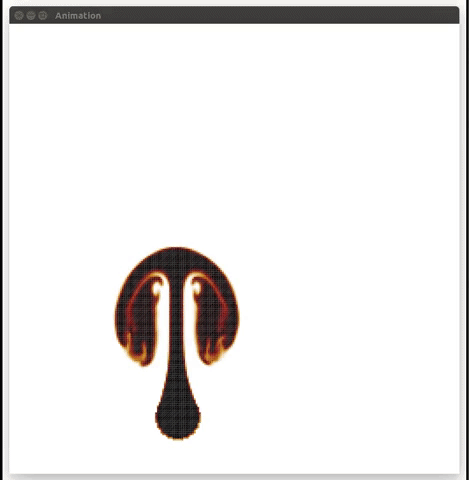
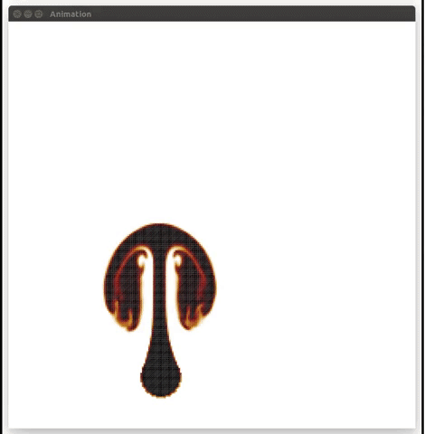
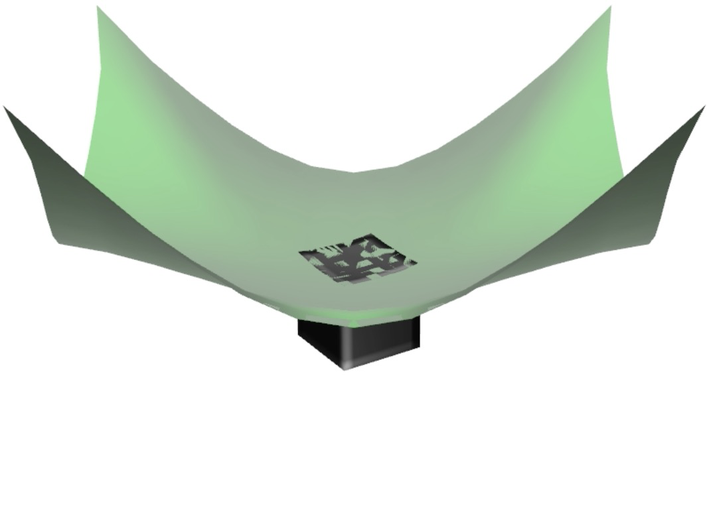
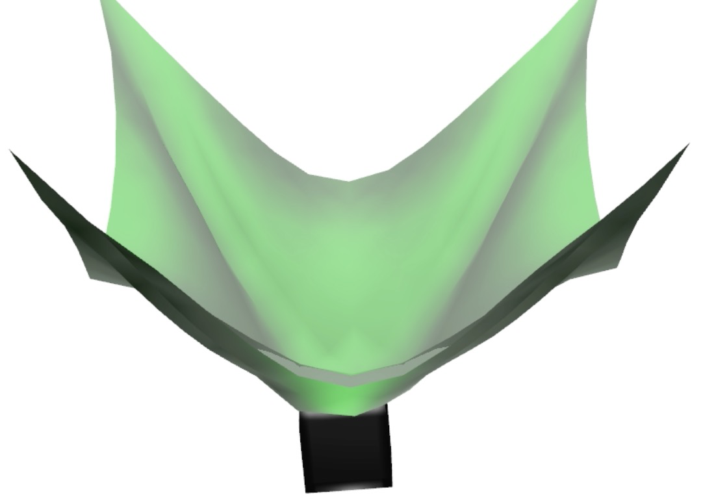

Jie Li
PhD student, Computer ScienceUniversity of Minnesota, Twin Cities
Email: lixx4611 at umn.edu
I'm a thrid year PhD student in the Department of Computer Science and Engineering at the University of Minnesota, Twin Cities, advised by Prof. Rahul Narain. My research interest focuses on physics based animation and computational optimization. I'm currently working on the cloth simulation with an implicit contact friction solver, which is a project we collaborate with Gilles and Florence at INRIA. Previously, I worked 3 years as an Android Engineer at Sina Weibo.
Publications

"ADMM ⊇ Projective Dynamics: Fast Simulation of Hyperelastic Models with Dynamic Constraints".
IEEE Transactions on Visualization and Computer Graphics, 2017.
Projects
Cloth Simulation with Implicit Contact and Friction Solver
We applied a fast and accurate contact and friction solver to a cloth simulator so as to capture the realistic friction related behaviors. Unlike traditional method that compute the friction force after the dynamics is updated, we compute the friction simultaneously with the dynamics following the exact Coulomb's law. This work is now at the final stage and we are aiming to submit it to SIGGRAPH 2018.
Grid Based Fluid (Course Project of Physics Based Animation)
A basic 2D grid based fluid simulator.
 

Deformable Object Simulation with FEM (Course Project of Physics Based Animation)
A basic 2D Deformable Object simulator using finite element method (FEM).

Two Way Constraint (Course Project of Nonlinear Optimization)
Added a two way coupling constraint to the ADMM project and solves it with the Lagrangian multipliers method. This is also part of the ADMM project leading by my colleague Matthew Overby. Besides the two way constraint, I also contributed in reducing the degree of freedom by projecting the data into the tangential subspace, improving the collision detection speed using BVH and setting up demos.
 Ray Tracer (Course Project of Graphics I)
A ray tracer renders with Phong model, which handles shadows, textures, refractions and reflections.


R-Simp LOD Algorithm. (Final Project of Graphics II)
Reverse Simplification is an LOD algorithm that simplifies model from coarseness to refinement.